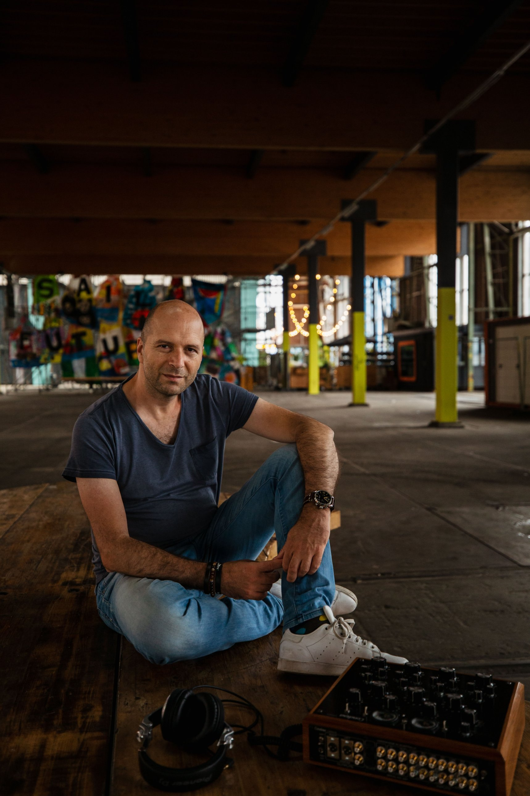

Founder story
OVER HEAR

Ik ben Maarten. Sinds 1993 draai ik als dj in bars, clubs, rooftopbars en beachclubs, en op corporate events van modeshow tot productlancering. Soms ook in het buitenland. Daardoor heb ik veel verschillende ruimtes en licht- en geluidssystemen leren kennen. Soms klinkt het geweldig en soms komt goede muziek niet tot haar recht. Dat was voor mij een trigger om een eigen assortiment aan dj-gear en audio op te bouwen en daarna ook licht.
Daarnaast werk ik zo’n 25 jaar als corporate communicatiespecialist voor grote organisaties. Ik weet dus ook wat er belangrijk is bij een merkactivatie, productlancering of personeelsevent bij een opdrachtgever.
Uit die combinatie is HEAR ontstaan.
Ik begin bij wat een klant, bureau of artiest voor ogen heeft en zoek daar het geluid en het licht bij. Als dj hoor ik wat een ruimte nodig heeft. Als adviseur begrijp ik wat de opdrachtgever wil bereiken.
Bij HEAR staan licht en geluid in dienst van de artiest, met kleurrijke lichtshows die de muziek en de sfeer versterken, maar nooit overstemmen.
Dat doe ik bij kleine en middelgrote events, van 50 tot 1.500 personen en in venues tot 35 meter diep. Ik werk daarbij samen met een netwerk van ervaren freelance professionals.
Daarnaast help ik venue-eigenaren hun ruimte om te bouwen tot een dansvloer voor een eenmalig event. Of ik adviseer ze hoe ze zelf hun licht en geluid kunnen inkopen: wat heeft de ruimte nodig, wat is er mogelijk en hoe zorg je dat het goed werkt, weinig onderhoud vraagt en lang meegaat? Daarbij breng ik ze in contact met de juiste leveranciers.
De naam HEAR heeft twee betekenissen. Allereerst staat het voor High End Audio Rental. Ik werk met merken waarvan de makers passie hebben voor hun vak. En een subtiele kwaliteit. Zoals bij een goed Italiaans maatpak: het hoeft geen aandacht te trekken, maar de kenner ziet de snit, materialen en afwerking.
Ik probeer continu nieuwe merken en producten uit. Ik vind het heel leuk om een band op te bouwen met Europese licht- en geluidsfabrikanten en samen te werken met professionals uit het vak. Daar leer ik veel van. Het maakt je ook bescheiden: hoe meer je leert van echte vakidioten, hoe meer je merkt wat je nog niet weet.
Daarnaast staat HEAR voor ‘kiezen op gehoor’. Een rider-friendly assortiment is commercieel gezien natuurlijk heel belangrijk voor een AV-bedrijf. Je kunt alleen gear verhuren waar vraag naar is. Maar eigen smaak telt ook. Wat bij HEAR in de flightcase gaat, moet passen bij beide. Producten waar ik zelf achter sta, gemaakt met vakmanschap, respect voor de cultuur en innovatie.
Kennismaken?
Stuur me een appje→of vertel over je eventLees ook: Waarden en uitgangspunten → · Netwerkpartners →